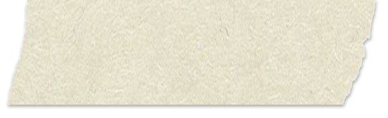
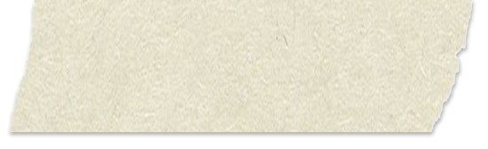
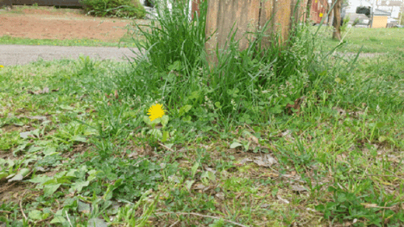
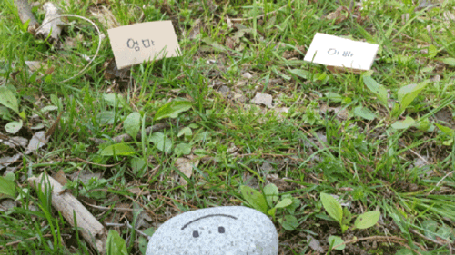
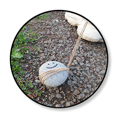
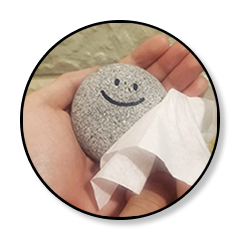
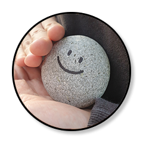
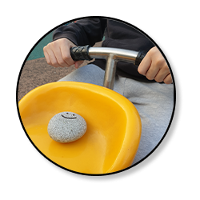

: 도리는 할 수 있어요 :
첫번째, 움직이기
도리와 상호작용을 하며 여러 동작을
훈련시킬 수 있어요.
도리는 기본적으로 뛰기,구르기같은 간단한 동작을 할 수 있어요. 시간이 지나면 손뼉치기, 애교부리기 등의 동작을 가르쳐줄 수 있습니다.
도리와 많은 소통을 해보세요!


두번째, 상담하기
도리는 당신의 이야기를 들어줄 수 있어요.
당신이 어떤 이야기를 하더라도, 도리는 당신의 곁을 묵묵히 지키며 들어줄 거에요.누군가에게 말하기 힘든 일이 있다면 도리에게 말해봐요.
도리의 입은 무거우니 걱정마세요.
세번째, 선택하기
도리는 당신이 놓은 여러 선택지 중 하나의 선택지를 골라줄 수 있어요.
데이트에 무슨 옷을 입을지 고민될 때, 내가 지금 뭘 해야할 지 잘 모르겠을 때, 계속 고민된다면?
결정장애 해결!
도리에게 맡겨보세요!

: 도리는 필요해요 :




